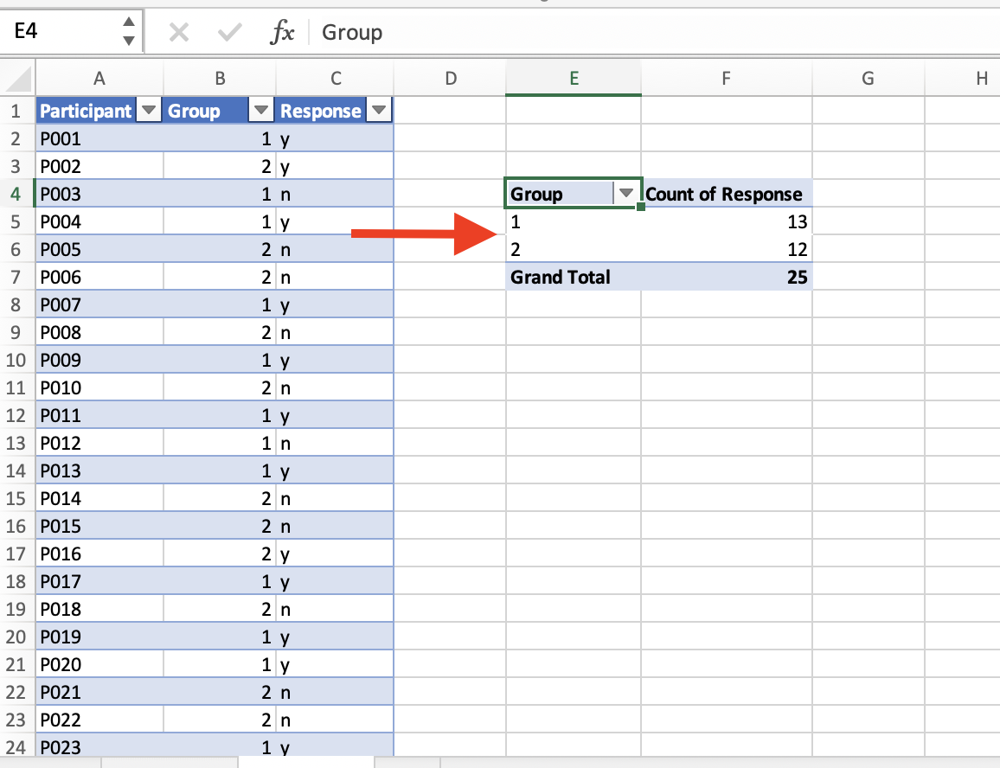

Datenvisualisierung mit Excel
Einfache Balkendiagramme
Für unser erstes Beispiel nutzen wir die Daten zur Konkurrenz von programmiert und vorprogrammiert aus dem DWDS-Kernkorpus des 20. Jahrhunderts (siehe Tutorial zur Korpuslinguistik). Es handelt sich um einen kleinen Datensatz mit Belegen für programmiert und vorprogrammiert, die daraufhin annotiert wurden, a) ob das Partizip attributiv oder prädikativ gebraucht wird (der programmierte Computer vs. der Computer ist programmiert), b) ob es sich auf das Objekt des Programmiervorgangs bezieht (die Maschine wird programmiert) oder auf das Resultat des Programmiervorgangs (die Maschine ist programmiert) und c) ob programmieren im wörtlichen Sinn gebraucht wird (die Maschine ist programmiert) oder im übertragenen, metaphorischen Sinn (der Skandal ist programmiert). Die Daten können Sie hier als Excel-Tabelle herunterladen.
Ideal für die Auswertung und Visualisierung solcher Daten in Excel ist die PivotChart-Funktion. Manches an dieser Funktion ist zunächst ein wenig gewöhnungsbedürftig, aber nach kurzer Eingewöhnungszeit ist sie doch halbwegs logisch und intuitiv. Mit dieser Funktion kann man sogenannte Pivot-Tabellen erstellen und direkt visualisieren. Mit Pivot-Tabellen sind Tabellen gemeint, die es erlauben, Daten aus einer bestehenden Tabelle, die als Dreh- und Angelpunkt (pivot) dient, zusammenzufassen, ohne dafür die ursprüngliche Tabelle zu verändern. Das nutzt man, um Daten zu aggregieren: Angenommen, wir haben eine Ergebnistabelle einer Umfrage, in der jede Teilnehmerin oder jeder Teilnehmer aus zwei Gruppen (Gruppe 1 und Gruppe 2) eine Frage mit Ja oder Nein beantworten musste. Nach dem Tidy-Data-Prinzip erscheinen die Ergebnisse jedes Teilnehmenden in der Tabelle in einer eigenen Zeile (links):
Eine Pivot-Tabelle fasst nun diese Einzeldaten zusammen (aggregiert sie), indem sie uns beispielsweise anzeigt, wie viele Personen in der jeweiligen Gruppe mit “Ja” oder “Nein” geantwortet haben (rechts).
Nun wollen wir uns unserem konkreten Beispiel zuwenden, dem (vor)programmiert-Datensatz. Stellen Sie zunächst sicher, dass eine Zelle innerhalb der Tabelle angewählt ist (z.B. die Zelle ganz oben links). Jetzt klicken wir im Reiter “Einfügen” auf “PivotChart”. Nun öffnet sich ein Fenster, in dem wir gefragt werden, welche Zellen Teil der PivotTable werden sollen (hier sollte Excel bereits automatisch erkannt haben, dass wir die ganze Tabelle einbeziehen wollen, sodass wir nichts mehr ändern müssen) und ob die Tabelle auf dem aktuellen oder einem neuen Arbeitsblatt erstellt werden soll – es empfiehlt sich, sie auf einem neuen Arbeitsblatt zu erstellen, was auch die Default-Option ist. Also können wir einfach OK klicken. Der folgende Screencast zeigt noch einmal die einzelnen Schritte.
== Screencast folgt ==
Nun öffnet sich ein neues Arbeitsblatt (mit den Reitern unten können Sie zwischen den Arbeitsblättern navigieren und ihnen ggf. auch aussagekräftigere Namen geben). Wir sehen ein dreigeteiltes Fenster. Im Arbeitsblatt selbst finden wir ein etwas kryptisch aussehendes, noch weitgehend leeres Feld mit einer Beschriftung wie “PivotTable1” o.ä. Das ist quasi der Platzhalter für die noch zu erstellende Tabelle. Rechts sehen wir oben eine Aufstellung der Namen der Tabellenspalten, unten sehen wir ein wiederum viergeteiltes Fenster. In die vier Felder in diesem Fenster können wir nun ausgewählte Spaltennamen aus dem Fenster oben rechts ziehen. Probieren Sie doch einmal, die Spalte “Hit” in das Feld “Zeilen” zu ziehen. Jetzt sehen Sie in der Pivot-Tabelle die beiden Zeilen “programmiert” und “vorprogrammiert”. Höchstwahrscheinlich ist “Hit” auch automatisch im Fenster “Werte” unten rechts aufgetaucht. Deshalb wird Ihnen in der Pivot-Tabelle auch die Häufigkeit der beiden Varianten angezeigt. Die Logik ist also ganz einfach: Was im Feld “Spalten” steht, taucht in den Spalten der Tabelle auf, was im Feld “Zeilen” steht, taucht in den Zeilen auf, und was im Feld “Werte” steht, das wird ausgezählt (bzw. bei numerischen Werten aufsummiert; hier muss man ggf. aufpassen, dass die richtige Operation gewählt ist. Durch Klick auf das kleine Info-Symbol in den Feldern kann man das bei Bedarf anpassen). Mit Hilfe des Felds “Filter” kann man die Daten bei Bedarf filtern.
In unserem Beispiel wollen wir genau das tun: Wir wollen ja nur die prädikativ gebrauchten Instanzen von (vor)programmiert berücksichtigen. Leeren wir die beiden Felder zunächst wieder, indem wir “Hit” aus dem jeweiligen Feld in das Fenster rechts oben ziehen. Dann ziehen wir die Spalte “prädikativ” in das Feld “Filter”. Jetzt können wir im Fenster links die nicht-prädikativen Daten herausfiltern.
Nun wollen wir eine tabellarische Übersicht über die Lesarten und die Referenz (Objekt vs. Resultat) getrennt nach den beiden Varianten “programmiert” und “vorprogrammiert” bekommen. Führen wir uns noch einmal vor Augen, was die dafür relevanten Tabellenspalten sind:
- Die Spalte “Lesart” enthält die Lesarten.
- Die Spalte “Referenz” enthält die Information darüber, ob der jeweilige Beleg auf das Objekt des Programmiervorgangs oder dessen Resultat referiert.
- Die Spalte “Hit” enthält die Variante des Treffers.
Zur Auswertung müssen wir die drei Spalten nun sinnvoll auf die “Zeilen”- und “Spalten”-Felder verteilen und zudem angeben, was ausgezählt werden soll. Hier gibt es mehrere Möglichkeiten; eine davon ist die folgende: In den Spalten werden die Daten nach Variante (“Hit”) ausgewertet, in den Zeilen zum einen nach Lesart, zum anderen nach Referenz. Ausgezählt wird die Spalte “Lesart” – genauso gut könnten wir aber auch die Spalte “Referenz” auszählen, die Ergebnisse wären die gleichen, da ja beide Variablen in der Tabelle berücksichtigt sind.
Schon auf den ersten Blick sehen wir eine ungleiche Verteilung der Daten auf die beiden Varianten: vorprogrammiert wird in unseren Daten ausschließlich in metaphorischen Kontexten und ausschließlich für Resultate gebraucht. Bei programmiert ist der Gebrauch vielfältiger, wenngleich auch hier eine Präferenz für eben diese Merkmalskombination (metaphorischer Kontext/Resultat) deutlich wird.
Quasi als Sahnehäubchen können wir diese Verteilung auch visualisieren, beispielsweise mit einem Balkendiagramm. Das geht, indem wir die relevanten Zellen in der PivotTable markieren (also alles, was nicht die Gesamtsumme anzeigt) und dann in “Einfügen” eine passende Visualisierungsoption auswählen.
Welche Daten auf der x- und auf der y-Achse dargestellt und welche innerhalb der Balken farblich kodiert werden, hängt davon ab, welche Daten in der Pivot-Tabelle in den Zeilen und in den Spalten stehen. Gegebenenfalls kann man hier noch ein paar Änderungen vornehmen, um die Darstellung sinnvoller zu gestalten. So entsteht ein Diagramm, bei dem die Variante (programmiert vs. vorprogrammiert) farblich kodiert wird. Das ist nicht unbedingt sinnvoll, weil wir ja wissen wollen, wie sich die Verteilung der unterschiedlichen Lesarten zwischen den beiden Varianten unterscheidet. Man kann die visuelle Darstellung auch in dem “Pivot Chart Fields”-Feld ändern, das sich bei der Erstellung des Balkendiagramms geöffnet haben dürfte.
Und noch etwas Feinjustierung: Damit die Grafik nicht so asymmetrisch aussieht, werden (im ersten Schritt) zunächst die Feldeinstellungen so verändert, dass auch Felder mit Null-Werten angezeigt werden. Anschließend wird ein Balkendiagramm ausgewählt, das den prozentualen Anteil der jeweiligen Variante darstellt. Durch Rechtsklick auf die Balken kann man außerdem noch “Data Labels” hinzufügen, d.h. die absoluten Werte in den Balken darstellen lassen. Das ist empfehlenswert, weil so die Leserin oder der Leser schnell einen Eindruck gewinnen kann, wie groß die Datenbasis ist, auf der die Darstellung basiert – denn es macht ja schon einen gewichtigen Unterschied, ob eine Verteilung wie, sagen wir 10% : 90% auf zehn, auf hundert oder auf tausend Datenpunkten basiert! Die “Data Labels” kann man hinzufügen durch Rechtsklick auf die Balken und Klick auf den Punkt “Show data labels”.
Liniendiagramme
Im obigen Beispiel konnten wir gut mit Balkendiagrammen arbeiten, weil wir es mit zwei kategorialen Variablen zu tun hatten, die ihrerseits nur wenige Variablenausprägungen aufwiesen: Die Variable “Lemma” hatte zwei Ausprägungen, programmiert und vorprogrammiert, die Variable “Lesart” drei (wörtlich, metaphorisch, unklar). Sobald kontinuierliche Variablen hinzukommen, hat das oben gewählte Vorgehen der Datenaggregation den gravierenden Nachteil, dass Informationen verlorengehen. Wenn wir beispielsweise mit einer Zeitreihe von 1900 bis 2000 arbeiten, könnten wir die Jahreszahlen beispielsweise nach Jahrzehnt gruppieren (1900–1909, 1910–1919 etc.) und damit die kontinuierliche Variable in eine kategoriale überführen, um etwa ein Balkendiagramm nutzen zu können. In manchen Fällen kann das auch sinnvoll sein, etwa wenn man zu wenige Daten hat, um sinnvoll etwas über die einzelnen Jahre aussagen zu können. In den meisten Fällen aber werden wir die zusätzliche Information, die wir dadurch haben, dass Daten für jedes einzelne Jahr vorliegen, nutzen und auch in der graphischen Darstellung sichtbar machen wollen.
Zum Glück gibt es eine Reihe von Visualisierungsmöglichkeiten, die uns genau das erlauben. Eine sehr einfache und weitverbreitete Möglichkeit ist das Liniendiagramm. Angenommen, wir wollen mit Hilfe der DWDS-Korpora die Frequenz von programmiert und vorprogrammiert über das 20. Jahrhundert hinweg, so können wir das z.B. mit Hilfe der auf der DWDS-Website verfügbaren Wortverlaufskurven machen. Das Ergebnis sieht dann so aus:

Aber natürlich wollen wir eine solche Grafik selbst erstellen können und arbeiten deshalb mit den rohen Frequenzdaten, die ich über kaskade.dwds.de/dstar erhoben habe. Wenn Sie sich für die Suchanfragen interessieren, klicken Sie bitte auf "Mehr dazu".
Die Gesamtzahl der Tokens wurde gefunden mit der Suchanfrage count(* #sep) #by[date/1].
Die Frequenz von programmiert und vorprogrammiert wurde gefunden mit count(@programmiert || @vorprogrammiert #sep) #by[$w, date/1].
Sie finden sie in der Datei programmiert_vorprogrammiert_frequenz.xlsx. Die darin enthaltene Tabelle hat sechs Spalten: 1. das Jahr, 2. die Gesamtzahl der Tokens, die das Korpus für dieses Jahr enthält, 3. die Frequenz von programmiert im gegebenen Jahr, 4. die Frequenz von vorprogrammiert im gegebenen Jahr, 5 und 6: die Frequenz von programmiert bzw. vorprogrammiert pro 100.000 Tokens im jeweiligen Jahr (errechnet, indem Spalte 3 bzw. 4 durch Spalte 2 dividiert wird und der Quotient mit 100.000 multipliziert wird).
In Excel können wir mit Hilfe sog. Pivot Charts flexible Visualisierungsmöglichkeiten nutzen.
Dafür klicken wir im Reiter “Einfügen” auf PivotChart und kommen auf die gleiche Übersicht, die wir aus Pivot-Tabellen kennen. Auch hier können wir wieder im Auswahlmenü ganz rechts Häkchen bei den Variablen setzen, die uns interessieren – in unserem Fall “Jahr”, “RelFreq_programmiert” und “RelFreq_vorprogrammiert”. Die beiden Spalten zeigen die Frequenz pro 100.000 Wörter, deshalb sind die Werte etwas anders als in der oben dargestellten Wortverlaufskurve (die z.T. auch auf anderen Daten beruht, da die Wortverlaufskurven-Funktion des DWDS nicht die Möglichkeit bietet, nur das Kernkorpus als Datengrundlage zu nehmen).
In der PivotChart-Ansicht können wir im Reiter “Design” den Diagrammtyp ändern und ein Liniendiagramm auswählen. Wenn wir die Variable “Jahr” nun in das Feld “Achse” und die beiden RelFreq-Spalten in das Feld “Werte” ziehen, erhalten wir ein Liniendiagramm, in dem die beiden Linien getrennt voneinander dargestellt werden. Wir können die Grafik etwas übersichtlicher gestalten, indem wir die Jahre, in denen (vor)programmiert ohnehin nicht belegt ist, herausfiltern, was einfach mit Klick auf das kleine Dreieck am “Jahr”-Feld in der Tabelle ganz links geht.

Bei allen Diagrammen ist es sinnvoll, aussagekräftige Achsenbeschriftungen für die x- und y-Achse hinzuzufügen. Während in unserem Beispiel die Interpretation der x-Achse relativ offensichtlich ist (es handelt sich um Jahre), ist nicht auf den ersten Blick zu erkennen, dass die y-Achse die Frequenz pro 100.000 Wörter zeigt. Das können wir ändern, indem wir im Tab “Design” Chart-Elemente hinzufügen, nämlich horizontale und vertikale Achsentitel.

Excel-Diagramme exportieren
Wenn Sie ein in Excel erstelltes Diagramm in Ihre Arbeit einbauen möchten, ist es sinnvoll, es als Grafikdatei zu exportieren. Es gibt zwar auch die Möglichkeit, das Diagramm einfach z.B. in Word zu copy&pasten, aber mehrere Gründe sprechen dafür, lieber mit einer Bilddatei zu arbeiten – so ist die Bilddatei statisch, während eine in Word gepastete Excel-Grafik oft noch mit der Excel-Tabelle verbunden bleibt, was zur Folge hat, dass sie sich ändert, wenn Sie die Excel-Datei ändern. Das kann praktisch sein, aber auch hinderlich, etwa wenn Sie versehentlich Änderungen in der Excel-Tabelle vornehmen. Und spätestens wenn Sie einmal einen “echten” Aufsatz für eine Zeitschrift oder einen Sammelband schreiben, werden Sie an separaten Bilddateien kaum vorbeikommen.
Leider sind die Exportmöglichkeiten für Grafiken bei Excel eher bescheiden. Ein nicht vollends befriedigender, aber einigermaßen praktikabler Workaround besteht darin, einfach einen Screenshot zu machen. Unter Windows geht das mit dem Programm “Snipping Tool”, das man mit Windows + Umschalt + S aufrufen kann, auf dem Mac funktioniert es mit Cmd + Control + 4 (Screenshot wird gespeichert) oder Cmd + Control + Umschalt + 4 (Screenshot wird in die Zwischenablage kopiert).
< Zurück Hauptseite Zu Calc